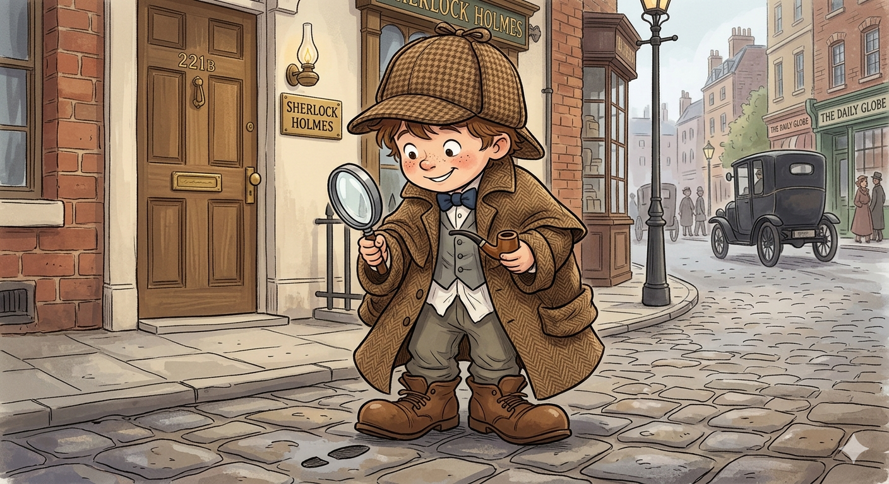

Sherlock Holmes potrzebuje pomocy
Zanim zaczniemy śledztwo, detektywie — jak się nazywasz? Czeka na Ciebie 25 zagadek prosto z książek Arthura Conan Doyle'a.

Śledztwo zakończone!
Piosenka dla Ciebie, detektywie!
Twoja nagroda za rozwiązanie sprawy gra automatycznie 🎵